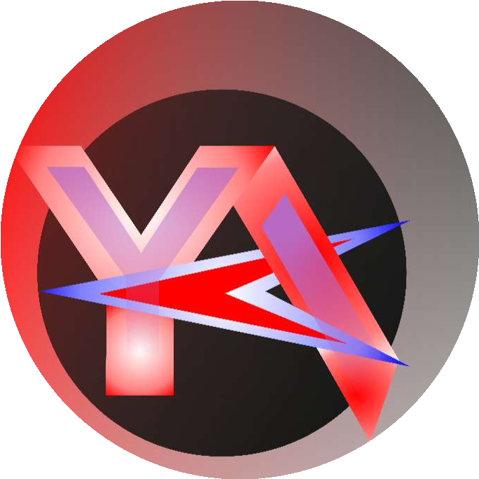
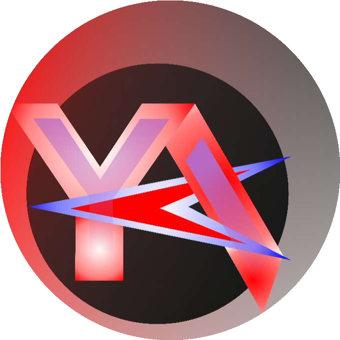
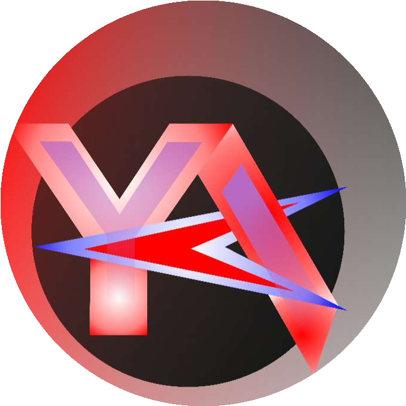
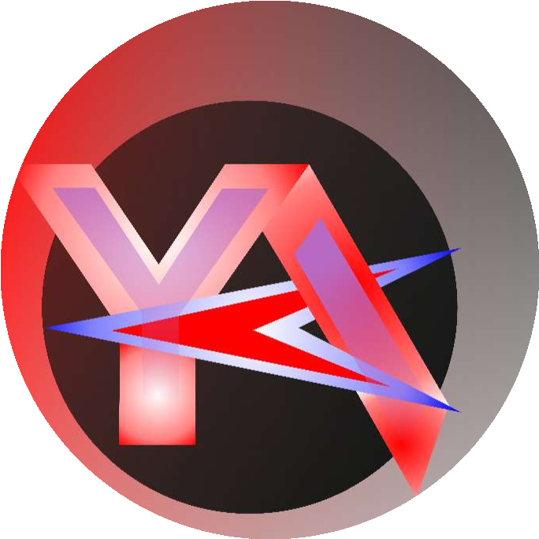

Pemrograman adalah proses menulis instruksi yang dapat dijalankan oleh komputer untuk menjalankan suatu tugas. Bahasa pemrograman memungkinkan kita berkomunikasi dengan komputer untuk mengembangkan perangkat lunak, aplikasi web, mobile, hingga sistem operasi. Kemampuan ini sangat penting di era digital karena hampir semua perangkat modern memerlukan instruksi dari program komputer untuk berfungsi.
| Programming Languages | |
|---|---|
| C++ |
|
| JavaScript |
|
| HTML |
|
| TypeScript |

|
| Dart |
|
| Python |
|